Lab 2 - AI Digital-First Multilingual Patient Journey
Section Agenda - 60 Minutes
| # | Task | Duration |
|---|---|---|
| 1 | Collaboration Control Hub Foundation | 15 min |
| 2 | AI Agent Studio – The Digital Duo | 15 min |
| 3 | Webex Connect – Flow Orchestration | 15 min |
| 4 | Web Asset & W3Schools Simulation | 10 min |
| 5 | Final Testing | 5 min |
Introduction
Welcome back, everyone. Imagine the scene: You've just landed in Las Vegas for Cisco Live. The desert air is dry, your schedule is packed, and suddenly, you're feeling under the weather. You need to visit the clinic, but you don't have time to wait on hold. You need an insurance form, and you need it now. This isn't just a lab; this is the future of patient care. Let's build it.
Key Learning
Unlike voice, digital flows require distinct agents per language to maintain session integrity across the web widget.
The PodID Discipline
Always replace XXX with your assigned 3-digit ID (e.g., 001, 002). Your naming convention must start with the prefix Pod followed by your PodID (PodXXX). If you do not follow this convention exactly, you will overwrite your neighbor's work. Stay disciplined with your naming convention!
Phase 1: Collaboration Control Hub Foundation
1.1 Channel Configuration
- Login to Collaboration Control hub with your Admin Credentials:
- Navigate to Collaboration Control Hub > Contact Center > Customer Experience > Channels
-
Click Create Channel and configure as follows:
Field Value Name PodXXX_Cumulus_WebChat Description Cumulus Hospital PodXXX Channel Type Chat Asset Name PodXXX_Cumulus_WebChat Service Level Threshold 60 seconds Timezone America/Los_Angeles -
Click Create
1.2 Multilingual Survey Creation
Before You Begin
Prerequisite: Ensure you have downloaded the Cumulus Hospital logo to your local machine. Right-click the image and select "Save image as..." to save it as Cumulus_Hospital.png inside your Desktop folder
{kind=link}
- Navigate to Collaboration Control Hub > Contact Center > Customer Experience > Survey Configuration
-
Click Create New Survey and select Digital Survey and configure as follows:
Summary
Field Value Name PodXXX_Cumulus_Survey - change XXX for your POD number Languages English (Default) & Spanish – Latin America (español) -
click next
-
English Configuration
Field Value Welcome Title Welcome Welcome Message (Leave blank) Select +Add a question Qestion Type: Star Question On a scale of 1 to 5, how satisfied were you with the assistance provided today? Start Label Very Dissatisfied (Negative statement) End Label Very Satisfied (Positive statement) Thank You Title Thank you for your time Thank You Message Thank you for your feedback! We appreciate your time and are committed to your health and well-being. Have a great day! -
Spanish Configuration: Switch to the Spanish – Latin America tab and configure as follows:
Field Value Welcome Title ¡Bienvenido! Welcome Message (Leave blank) Select +Add a question Qestion Type: Star Question En una escala del 1 al 5, ¿qué tan satisfecho estuvo con la asistencia recibida hoy? Start Label Muy insatisfecho (Negative statement) End Label Muy satisfecho (Positive statement) Thank You Title Gracias! Thank You Message ¡Gracias por sus comentarios! Valoramos mucho su tiempo y estamos comprometidos con su salud y bienestar. ¡Que tenga un excelente día! -
Click the English tab.
-
Click Next (bottom right) and configure as follows:
-
Appearance Configuration
Field Value Color > Brand Color #0a7ec7 Text Color (Welcome Title) #FFFFFF Brand Logo Upload Cumulus_Hospital.png from your desktop folder Background Image Upload Cumulus_Hospital.png from your desktop folder -
Click Save
See how to configure
{kind=link}
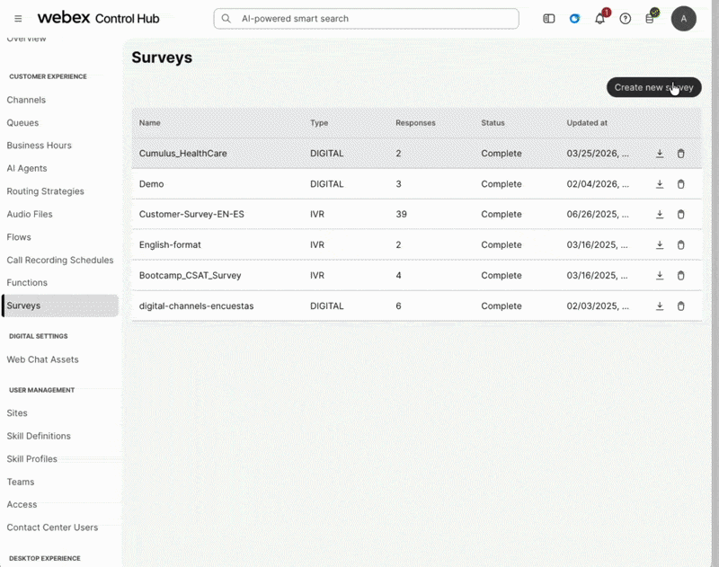
Phase 2: AI Agent Studio – The "Digital Duo"
Navigate to Collaboration Control Hub > Contact Center > Customer Experience > AI Agent and click on the black button Build your AI Agent.
2.1 English Agent
Step 1 – Extract Website into Knowledge Base
What is Website Extraction?
The Knowledge Base already contains a pre-loaded file with general information about Cumulus Hospital and its patient intake forms.
In this step, we will add website source to extract additional content, specifically the types of diagnostic services offered by the hospital. The crawler starts from a URL you specify and navigates through pages based on depth and page limits, transforming web content into knowledge your AI Agent can access instantly.
For time-keeping purposes, we will only perform this step for the English AI Agent.
- Navigate to the Knowledge tab (third tab) in the AI Agent Studio.
- Locate the Knowledge Base
PodXXX_UseCase2_AIAgentCumulus_ENand click it. (Replace XXX with your PodID) - In the top right corner, click the black Add Source button and select Websites.
- Read and agree to the disclaimer.
-
Configure the source as follows:
Field Value Source Name Cumulus HospitalDescription Cumulus Hospital ServicesStarting URL https://carolmor-collab.github.io/cumulus-hospital/Deep Limit 1Page Limit 10Content Exclusions Nav & FooterWant to preview the website?
Open https://carolmor-collab.github.io/cumulus-hospital/ in a new browser tab to see the content that will be extracted.
-
Under Sync Rule Schedule, keep Automatically apply changes to agents or skills selected.
- Click Add Source.
Syncing in Progress
The source will take a couple of minutes to sync. Once it shows Updated, click the ✏️ pencil icon to review the content that was extracted.
If it is still syncing, continue to the next step — it will complete in the background.
See How to configure
{kind=link}
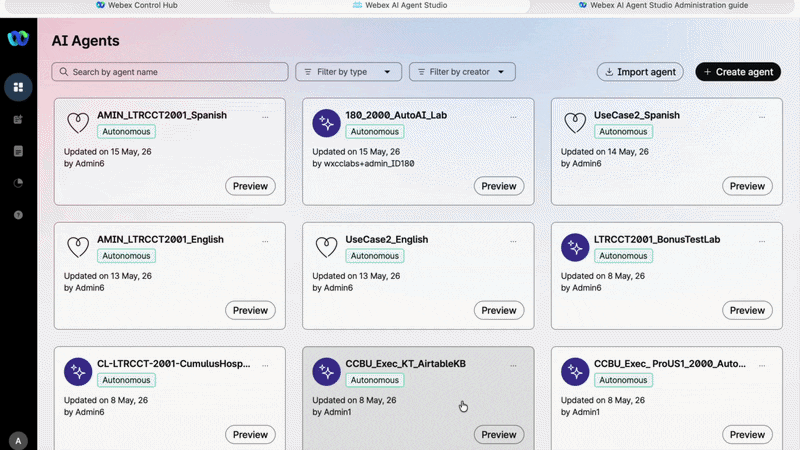
Step 2 - Export the Template Agent
-
Navigate to the AI Agent tab (first tab) in the AI Agent Studio.
-
In the search bar, type
UseCase2_Englishto locate the AI Agent.
Under UseCase2_English, click the three dots (...) and select Export agent. This will download theUseCase2_English.jsonfile to your local machine. Save it in your Desktop folder.
See how to Export
{kind=link}
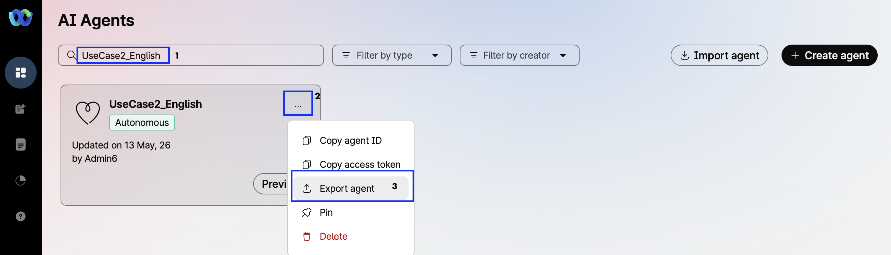
Step 3 - Import the Template to Create Your AI Agent
There in the Studio > Click Import AI Agent. Under the Upload button,
select the UseCase2_English.json file.
Step 4 - Naming
| Field | Value |
|---|---|
| Name | PodXXX_UseCase2_English (Replace XXX with your PodID) |
| System ID | Keep the default |
Click Import
See how to Import
{kind=link}
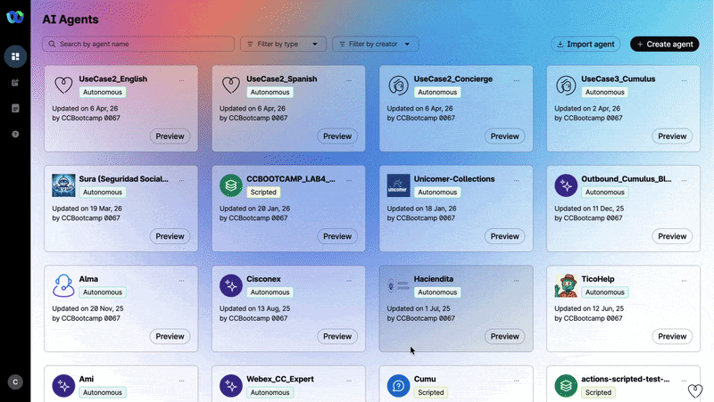
Step 5 – Knowledge Configuration
In the PodXXX_UseCase2_English AI Agent page, go to the Knowledge tab, Click the search box, type the value below, and select it from the dropdown:
| Field | Value |
|---|---|
| Knowledge Base | PodXXX_UseCase2_AIAgentCumulus_EN |
Remeber to replace XXX with your PodID
Each student has their own Knowledge Base. Selecting the wrong one will break another student's lab.
Click Save and then Publish. For the comment, use: V1
Step 6 – Test
Use the Preview feature in the AI Agent Studio to simulate a live chat.
Inside PodXXX_UseCase2_English AI Agent page Select Preview and Start a chat and verify:
- Identity Capture: The agent asks for your name.
- Conversational NLU - General request: Test the agent's ability to handle general question by saying: Hi, I’m currently in Las Vegas on a business trip and I’m feeling under the weather. I don’t feel well and I think I need to get medical assistance
- Conversational NLU - Specific request: Test the agent's ability to handle specific context by saying: What kind of diagnostics services do you have?
- Intent Recognition: The agent recognizes the Insurance Forms intent when you say: I need some forms
- Form Delivery: The agent provides the correct URL for the requested form.
- Language Consistency: The entire interaction remains in English.
Test Script — English
| Role | Message |
|---|---|
| 🤖 Prompt | Hello, I am Pulse from Cumulus Hospital. May I have your name, please, so I can assist you better? |
| 👤 User | Caro |
| 🤖 Prompt | Hello, Caro. I am Pulse from Cumulus Hospital, how can I help you? |
| 👤 User | Hi, I'm currently in Las Vegas on a business trip and I'm feeling under the weather. I don't feel well and I think I need to get medical assistance. |
| 🤖 Prompt | Caro, I'm sorry to hear that you're not feeling well. Cumulus Hospital has a facility in Las Vegas located at 123 Neon Way, Las Vegas, NV 89101. They offer emergency services, MRI, X-Ray, and general surgery. If you need immediate medical attention, please visit this location for assistance. Is there anything else I can help you with today? |
| 👤 User | Yes, I need a form. |
| 🤖 Prompt | Caro, here are the standard forms available: Patient Registration Form · Insurance Claim Form · Authorization Form · Medical Records Release Form. Please let me know which form you need, and I will share the link with you. |
| 👤 User | Patient Registration Form |
| 🤖 Prompt | Thank you, Caro. The form has been shared. Please complete the document and return it to our registration office at your earliest convenience. Here is the Patient Registration Form: Patient Registration Form 2026. Is there anything else I can help you with today? |
See how it works
{kind=link}
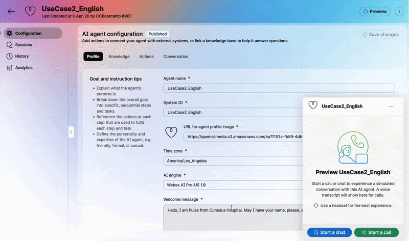
Step 7 – Session Inspection
In the PodXXX_UseCase2_English AI Agent page, open the Sessions tab located on the left-hand navigation menu. Review the most recent session log to confirm the conversation was triggered and processed correctly.
See how it works
{kind=link}
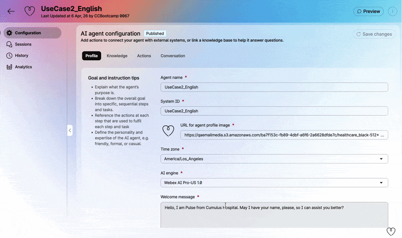
Session Inspection
At any point, inside the preview chat, hover over the chat bubble and click View In Session to open the session inspection panel directly.
2.2 Spanish Agent
Step 1 – Export the Template Agent
In the search bar, type UseCase2_Spanish to locate the AI Agent.
Under UseCase2_Spanish AI Agent, click the three dots (...) and select Export agent.
This will download the UseCase2_Spanish.json file to your local machine.
Save it in your desktop folder.
Step 2 – Import the Template to Create Your AI Agent
There in the Studio > Click Import AI Agent. Under the Upload button,
select the UseCase2_Spanish.json file.
Step 3 – Naming
| Field | Value |
|---|---|
| Name | PodXXX_UseCase2_Spanish (Replace XXX with your PodID) |
| System ID | Keep the default |
Click Import
Step 4 – Knowledge Configuration
In the PodXXX_UseCase2_Spanish AI Agent page, go to the Knowledge tab, click the search box, type the value below, and select it from the dropdown:
| Field | Value |
|---|---|
| Knowledge Base | PodXXX_UseCase2_AIAgentCumulus_ES |
Remeber to replace XXX with your PodID
Each student has their own Knowledge Base. Selecting the wrong one will break another student's lab.
Click Save and then Publish. For the comment, use: V1
Step 5 – Test
Use the Preview feature in the AI Agent Studio to simulate a live chat. Inside PodXXX_UseCase2_Spanish AI Agent page Select Preview and Start a chat and verify:
- Identity Capture: The agent asks for your name.
- Conversational NLU: Test the agent's ability to handle context by saying: Hola, estoy actualmente en Las Vegas en un viaje de trabajo y me siento un poco mal. No me siento bien y creo que necesito recibir asistencia médica
- Intent Recognition: The agent recognizes the Insurance Forms intent when you say: Necesito unos formularios
- Form Delivery: The agent provides the correct URL for the requested form.
- Language Consistency: The entire interaction remains in Spanish.
Test Script — Spanish
| Role | Message |
|---|---|
| 🤖 Prompt | Hola, soy Pulso del Hospital Cumulus. ¿Podría decirme su nombre, por favor, para poder asistirle mejor? |
| 👤 User | Caro |
| 🤖 Prompt | Hola, Caro. Soy Pulso del Hospital Cumulus, ¿en qué puedo ayudarle hoy? |
| 👤 User | Hola, estoy actualmente en Las Vegas en un viaje de trabajo y me siento un poco mal. No me siento bien y creo que necesito recibir asistencia médica. |
| 🤖 Prompt | Caro, lamento que no se sienta bien. El Hospital Cumulus cuenta con una sede en Las Vegas ubicada en 123 Neon Way, Las Vegas, NV 89101, donde puede recibir atención médica de emergencia, servicios de rayos X, cirugía general y más. El hospital está abierto de lunes a viernes, de 8:00 a. m. a 6:00 p. m. ¿Le gustaría información sobre cómo llegar, los servicios disponibles o necesita algún formulario específico para su atención? Estoy aquí para ayudarle. |
| 👤 User | Necesito un formulario. |
| 🤖 Prompt | Caro, estos son los formularios estándar que puedo proporcionarle: Formulario de Registro de Paciente · Formulario de Reclamo de Seguro · Formulario de Autorización · Formulario de Liberación de Registros Médicos. ¿Podría indicarme cuál de estos formularios necesita? Así podré compartirle el enlace correspondiente. |
| 👤 User | Formulario de Reclamo de Seguro |
| 🤖 Prompt | Gracias, Caro. Aquí tiene el enlace para descargar el Formulario de Reclamo de Seguro 2026. Por favor, complete el documento y devuélvalo a nuestra oficina de registro a la brevedad posible. ¿Hay algo más en lo que pueda ayudarle hoy? |
See how it works
{kind=link}
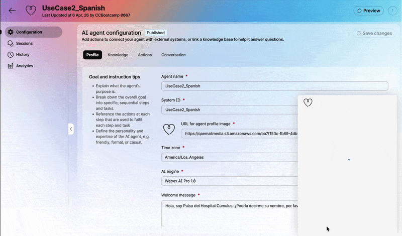
Session Inspection
At any point, inside the preview chat, hover over the chat bubble and click View In Session to open the session inspection panel directly.
Phase 3: Webex Connect – Flow Orchestration
In this phase, you will "activate" the brain of Cumulus Hospital. You will map the routing logic to the language-specific agents and ensure the patient experience is seamless.
Pro-Tip
Think of this flow as the "brain" of Cumulus Hospital. The Digital flow acts as the receptionist, and the routing and decision nodes act as the hallways that direct the patient to the specific specialist who speaks their language.
{kind=link}
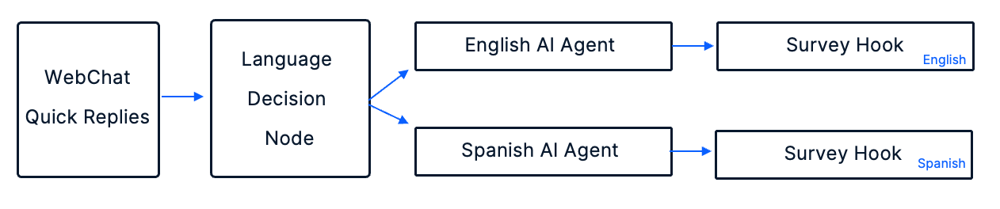
3.1 Navigate to Webex Connect
Go to Collaboration Control Hub > Contact Center > Quick Links > Digital Channels > Webex Connect and navigate to your own service: PodXXX_LTRCCT2001_CUMULUS.
Remeber to replace XXX with your PodID
Each student has their own Webex Connect Service. Selecting the wrong one will break another student's lab.
3.2 Open the Flow
Click on UseCase2_webChat flow to open it You will see the complete architecture for our bilingual digital journey. Your task is to "activate" the orchestration by mapping the variables and agents.
{kind=link}
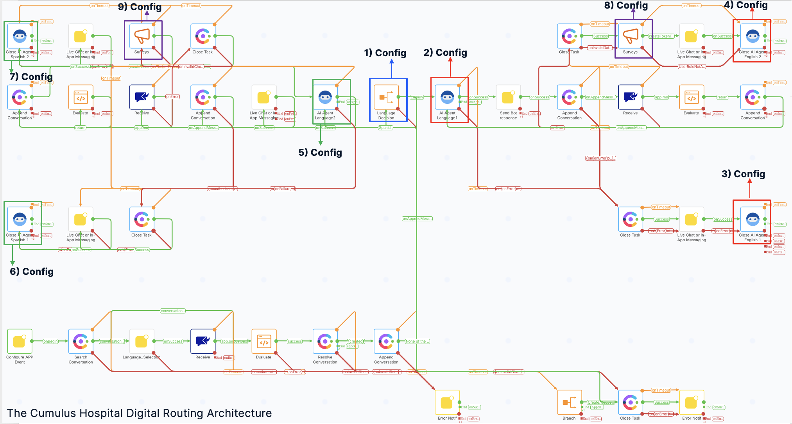
Reference Key: Each configuration number shown in the diagram above corresponds directly to the step-by-step instructions provided in the sections below (3.2.1 through 3.2.3). Use this as your reference key to ensure every node is correctly mapped within your Webex Connect flow.
After opening the flow you can zoom out to see the same diagram
{kind=link}
3.2.1 Language Decision
Locate the Language Decision branch node.
| Number | Node | Color | Action | Function |
|---|---|---|---|---|
| 1 | Language Decision | Blue | Configure as follow for English & Spanish Branch | Evaluate the 'receive.message' variable captured by your Quick Replies. This logic directs the patient to the English or Spanish path based on their button selection. |
For Branch 1
Open the Language Decision Node, expand the Branch 1 and configure as follow:
| Field | Value |
|---|---|
| Branch Name | Change from Branch 1 to English |
| Variable | $(n2545.receive.message) - leave it as configured |
| Condition | Contains ignore case - leave it as configured |
| Value | English |
Cannot edit the branch name?
If you see the ✏️ pencil and 🗑️ trash icons together, close the node, click Save in the main flow, go back to the main service using the "<" button, and reload the flow — the fields will become editable again.
See Example — ① Language Decision - English
{kind=link}
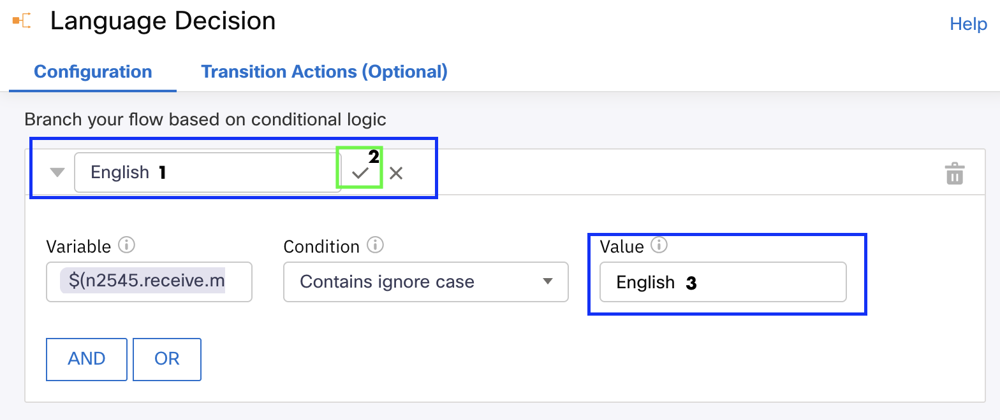
👆 Rename Branch 1 to English and set the value to English.
After renaming, make sure to click ✅ to save name changes
For Branch 2
In the same Language Decision Node, now expand the Branch 2 and configure as follow:
| Field | Value |
|---|---|
| Branch Name | Change from Branch 2 to Spanish |
| Variable | $(n2545.receive.message) - leave it as configured |
| Condition | Contains ignore case - leave it as configured |
| Value | Español |
After Spanish Branch´s configuration make sure to Save
See Example — ① Language Decision - Spanish
{kind=link}
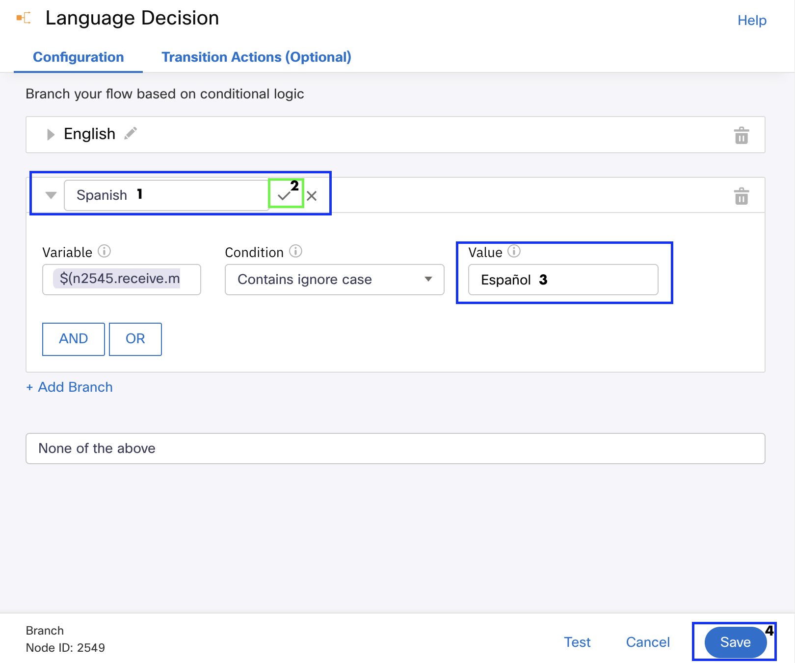
👆 Rename Branch 2 to Spanish and set the value to Español.
After renaming, make sure to click ✅ to save name changes
None of the above: Leave it as it is.
3.2.2 Language Agent Orchestration
Locate the numbered nodes in your flow, double-click to open each one, and configure them as follows:
| Number | Node | Color | Action | Function |
|---|---|---|---|---|
| 2 | AI Agent Language1 | Red |
|
English AI Agent |
| 5 | AI Agent Language2 | Green |
|
Spanish AI Agent |
After each configuration make sure to Save
See Example — ② AI Agent English
{kind=link}
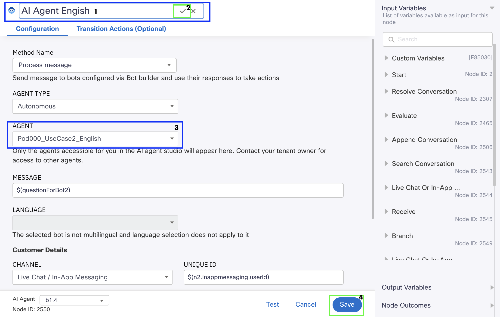
👆 Rename the node to AI Agent English and select PodXXX_UseCase2_English.
After renaming, make sure to click ✅ to save name changes
See Example — ⑤ AI Agent Spanish
{kind=link}
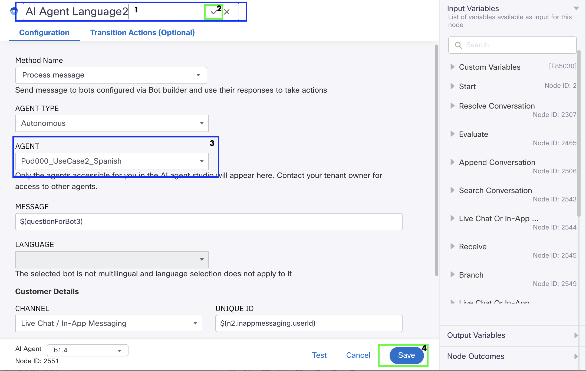
👆 Rename the node to AI Agent Spanish and select PodXXX_UseCase2_Spanish.
After renaming, make sure to click ✅ to save name changes
3.2.3 Closing & Survey Hooks
Configure the final nodes to ensure a graceful exit and accurate data collection.
Locate the numbered nodes in your flow, double-click to open each one, and configure them as follows:
Close AI Agent Nodes
| Number | Node | Color | Action | Function |
|---|---|---|---|---|
| 3 | Close AI Agent English 1 | Red | Select PodXXX_UseCase2_English | Ensures session cleanup upon error |
| 4 | Close AI Agent English 2 | Red | Select PodXXX_UseCase2_English | Handles session closure after survey is presented to the user |
| 6 | Close AI Agent Spanish 1 | Green | Select PodXXX_UseCase2_Spanish | Ensures session cleanup upon error |
| 7 | Close AI Agent Spanish 2 | Green | Select PodXXX_UseCase2_Spanish | Handles session closure after survey is presented to the user |
After each configuration make sure to Save
See Example — ③ ④ English Nodes
{kind=link}
{kind=link}
See Example — ⑥ ⑦ Spanish Nodes
{kind=link}
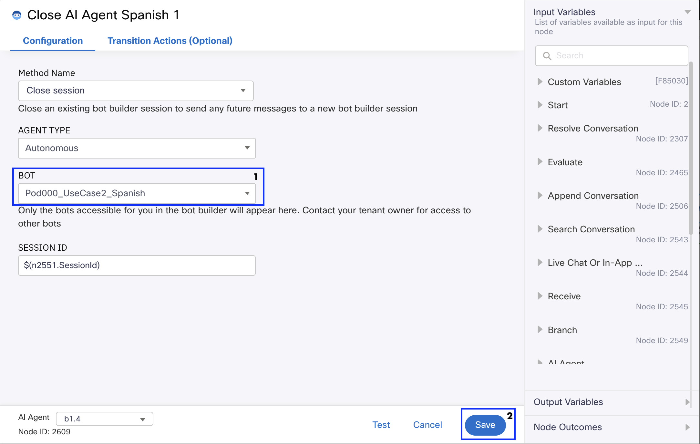
👆 Select PodXXX_UseCase2_Spanish — Ensures session cleanup upon error.
{kind=link}
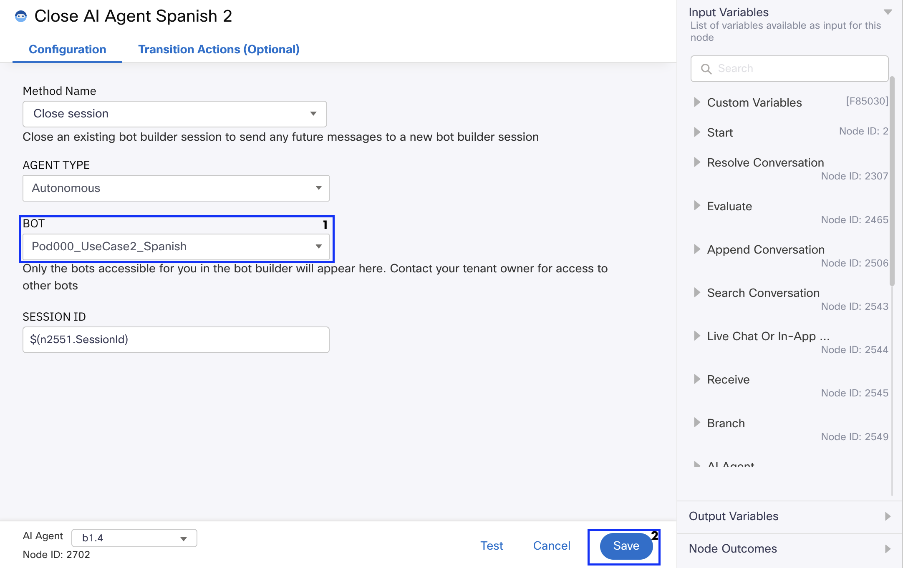
👆 Select PodXXX_UseCase2_Spanish — Handles session closure after survey is presented.
Survey Hook – English Path
Locate the numbered node in your flow, double-click to open, and configure it as follows:
| Number | Node | Color | Function |
|---|---|---|---|
| 8 | Survey | Purple | Triggers English CSAT survey |
Configure the node with the following settings:
- Node Authentication — Select
LTRCCT2001 - Click Fetch All Questionnaires
- Under Available Questionnaires, select your own survey:
PodXXX_Cumulus_Survey - Set the Preferred Language field to
English
After configuration, make sure to Save.
See Example — ⑧ Survey English
{kind=link}
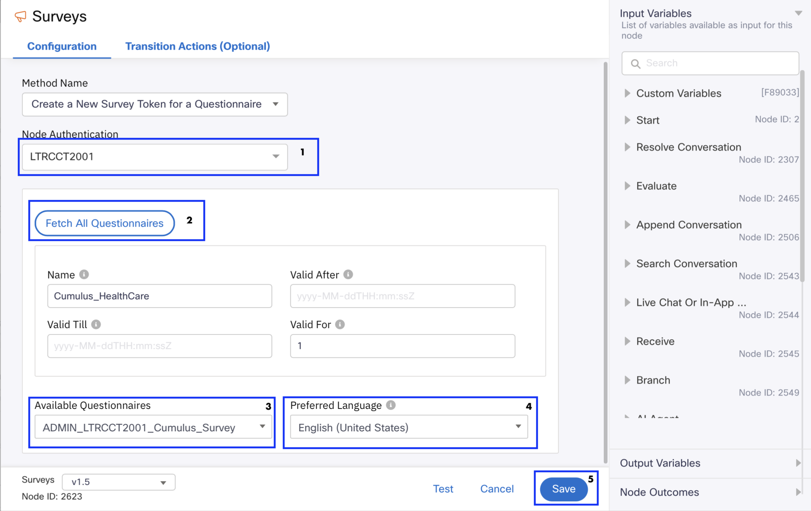
👆 Set the Preferred Language field to English to trigger the English CSAT survey.
Survey Hook – Spanish Path
Locate the numbered node in your flow, double-click to open, and configure it as follows:
| Number | Node | Color | Function |
|---|---|---|---|
| 9 | Survey | Purple | Triggers Spanish CSAT survey |
Configure the node with the following settings:
- Node Authentication — Select
LTRCCT2001 - Click Fetch All Questionnaires
- Under Available Questionnaires, select your own survey:
PodXXX_Cumulus_Survey - Set the Preferred Language field to
Spanish
See Example — ⑨ Survey Spanish
{kind=link}
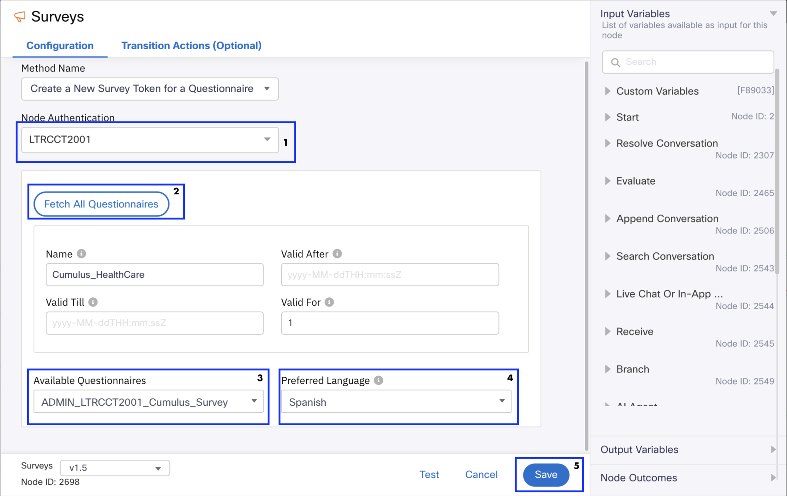
👆 Set the Preferred Language field to Spanish to trigger the Spanish CSAT survey.
Click the blue Make Live button, select your asset PodXXX_Cumulus_WebChat from the Application dropdown, and click Make Live again.
Going Live
It will take approximately 3 minutes for the status to change to Live. You can continue working in the meantime.
See how it works
{kind=link}
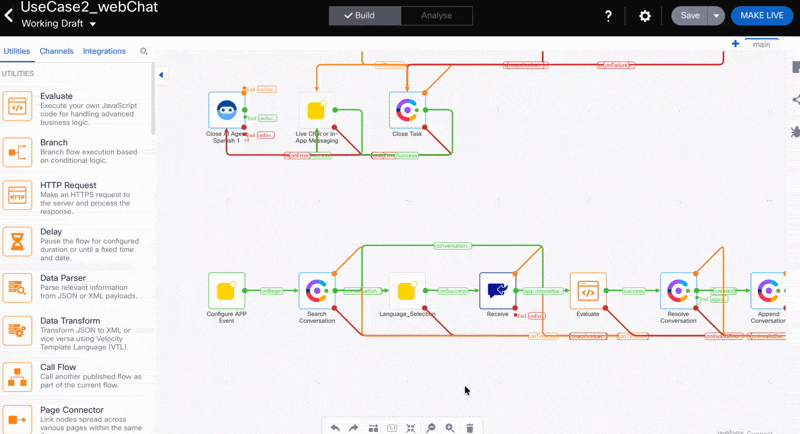
Phase 4: Web Asset & W3Schools Simulation
4.1 Web Chat Asset
Before You Begin
Ensure you have downloaded the Cumulus Hospital logo to your local machine and saved it as Cumulus_Hospital.png on your desktop (See Step 1.2 — Multilingual Survey Creation).
Navigate to Collaboration Control Hub > Contact Center > Digital Settings > Web Chat Assets and locate the asset PodXXX_Cumulus_WebChat, and click on it to open the configuration settings:
Asset Settings
Configure as follow:
| Field | Value |
|---|---|
| Notifications | Turn on – Play chime sound when user receives a new message |
Website
Navigate to the Website tab, then click Add Website to launch the configuration workflow. In the General section, configure the following fields:
| Field | Value |
|---|---|
| Chat widget language | English |
| Display name | Cumulus Hospital |
| Byline text | Leave it blank |
| First message | Hi! |
| PCI compliance banner message | We are committed to protecting your information. This chat is secure and PCI compliant. |
| Domain | www.w3schools.com |
Email transcript: Leave it as it is configured. Click Next.
Appearance tab Configure the following fields:
| Field | Value |
|---|---|
| Widget color | #0a7ec7 |
| Widget Button | Select the first option available |
| Logo | Upload Cumulus_Hospital.png from your desktop |
| Message composer | Turn on Allow emojis · Turn on Allow attachments |
Click Next.
Availability tab
Click Save and Next.
Getting an error after clicking Save & Next?
This is expected in the lab environment, multiple pods share the same domain for web chat assets. Simply click X to dismiss the error and your website widget will be enabled correctly.
Error
{kind=link}
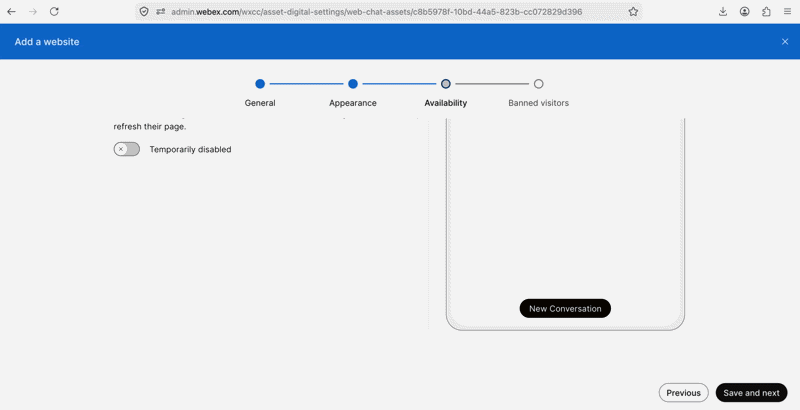
Banned Visitors
If you do not get the error, click Done.
{kind=link}
4.2 W3Schools Simulation
-
Open the W3Schools HTML Editor at https://www.w3schools.com/
-
Click on the Try it Yourself button
4.3 Apply Branded HTML Structure
Replace the existing HTML with the recommended branded HTML structure for Cumulus Healthcare. Copy and paste this:
<!DOCTYPE html>
<html lang="en">
<head>
<meta charset="UTF-8">
<meta name="viewport" content="width=device-width, initial-scale=1.0">
<title>Cumulus Hospital | Digital Assistant</title>
<style>
body {
font-family: 'Segoe UI', Tahoma, Geneva, Verdana, sans-serif;
background-color: #f4f7f9;
display: flex;
flex-direction: column;
align-items: center;
padding: 50px;
margin: 0;
}
.header-container {
text-align: center;
margin-bottom: 30px;
background: white;
padding: 30px 40px;
border-radius: 15px;
box-shadow: 0 4px 15px rgba(0,0,0,0.1);
width: 100%;
max-width: 600px;
}
.logo-img {
width: 120px;
height: auto;
margin-bottom: 15px;
}
h1 {
color: #005073;
margin: 0;
font-size: 28px;
}
p {
color: #56627c;
font-size: 1.1em;
margin-top: 5px;
}
</style>
</head>
<body>
<div class="header-container">
<img src="https://qaemailmedia.s3.amazonaws.com/ba7f153c-fb89-4dbf-a6f6-2a6628dfde7c/CumulusHospital_1234268365472632.png" alt="Cumulus Hospital Logo" class="logo-img">
<h1>Cumulus Hospital</h1>
<p>Digital Patient Care & Virtual Assistant Portal</p>
</div>
<!-- Paste here your installation script -->
</body>
</html>
4.4 Verify Branding
Click Run and confirm the page is branded with Cumulus HealthCare information.
{kind=link}
4.5 Copy Web Chat Installation Script
Go to Collaboration Control Hub > Contact Center > Digital Settings > Web Chat Assets. Select your asset PodXXX_Cumulus_WebChat, navigate to the Installation tab, and click Copy.
{kind=link}
4.6 Insert and Run
Insert your Web Chat Installation Script (copied in the previous step)
into the W3Schools portal in the space indicated in the HTML script.
| <!-- Paste here your installation script --> |
Click Run. If the widget appears in the preview pane, you have successfully connected your Cumulus Hospital portal to Webex Contact Center.
{kind=link}
Success
Your Cumulus Hospital web chat widget is now live and connected to Webex Contact Center.
Phase 5: Final Testing
The Digital-First Mindset
When you test, observe the transition from the Quick Replies to the Language Agent. It should be invisible to the patient. That is the hallmark of a high-quality omnichannel experience.
Run the full test twice — once in English, then in Spanish.
Step 1 – English Test
Test Script – English
- Launch the chat widget
- Select English and provide your name
- Type: I am in Las Vegas on a business trip and I am not feeling very well, I need assistance
- Wait for the AI Agent response
- Ask for a form to get assistance (Patient Registration Form, Insurance Claim Form, Authorization Form, Medical Records Release Form)
- Verify the agent responds in English and provides the correct URL
- Wait 60 seconds and complete the survey
{kind=link}
Step 2 – Spanish Test
Test Script – Spanish
- Open the chat widget
- Select Spanish and provide your name
- Type: Estoy en Las Vegas en un viaje de negocios y no me siento muy bien, necesito asistencia
- Wait for the AI Agent's response
- Request a form to get assistance (Formulario de Registro de paciente, Formulario de reclamo de seguro, Formulario de Autorización, Formulario de liberación de registros médicos)
- Verify that the agent responds in Spanish and provides the correct URL
- Wait 60 seconds and complete the survey
{kind=link}
🏁 Lab 2 Complete – Congratulations! 🎉
You have successfully completed Lab 2 – AI Digital-First Multilingual Patient Journey.
| Component | Status |
|---|---|
| Web Chat Channel | Created and configured |
| Multilingual Survey (EN + ES) | Created and branded |
| English AI Agent | Imported, configured, and published |
| Spanish AI Agent | Imported, configured, and published |
| Webex Connect Flow Orchestration | Configured and activated |
| Web Chat Asset | Configured and branded |
| W3Schools Simulation | Connected and validated |
| End-to-End Testing (EN + ES) | All scenarios validated |
✨ Omnichannel Consistency: You’ve bridged the gap between voice and digital, ensuring Cumulus Hospital provides a seamless experience for every patient.
If you run into any issues, flag me down. Let’s go!
Lab authored for Cisco Live 2026